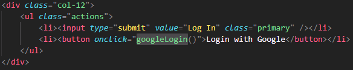
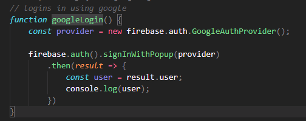
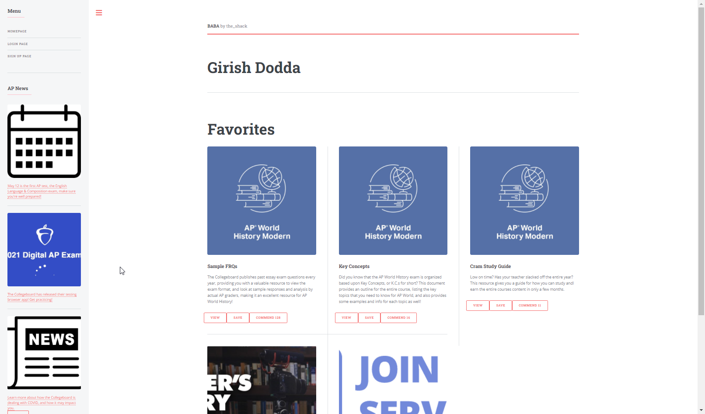
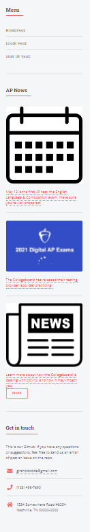

|
Original progress with BABA BABA is a librabry made by AP students for AP students
A collection of resources and a dynamiclly loading page to display those resources. A progressive searchbar that used "tags" to find resources based on many different searches a user might use. A commedning system to commend the resources you find useful. MVP: BABA Github: Link |
|
|   |
Addition of Accounts Accounts were created in order to help users save their research progress. Status: DONE It took a excruciating amounts of research as understanding the basic conept of databases and implementing something as complicated as authenticon in the backend was a topic well above my area. |
|  |
Adding a profile page Profile page was added for users to gather and use all their commended resources. Status: DONE Creating the profile page was some what simpler as I could reuse a lot of HTML code from my previous reosuces but it was time consuming when I was hookinh it up to dynamically show reoucres from firebase. |
|  |
Adding a News Bar News bar was added as a chrerry on top. This way students who use this website for resources are able to get notified on the latest news from AP collegeboard. Status: DONE Creating the news bar required a different set of knowledge as collapsable sidebars were something I wasn't used to working with. If collegeboard had an API for news, this news bar could be updated dynamically. |